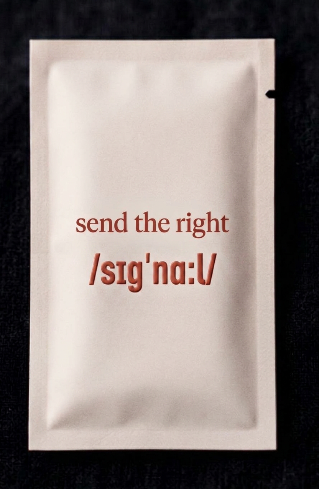
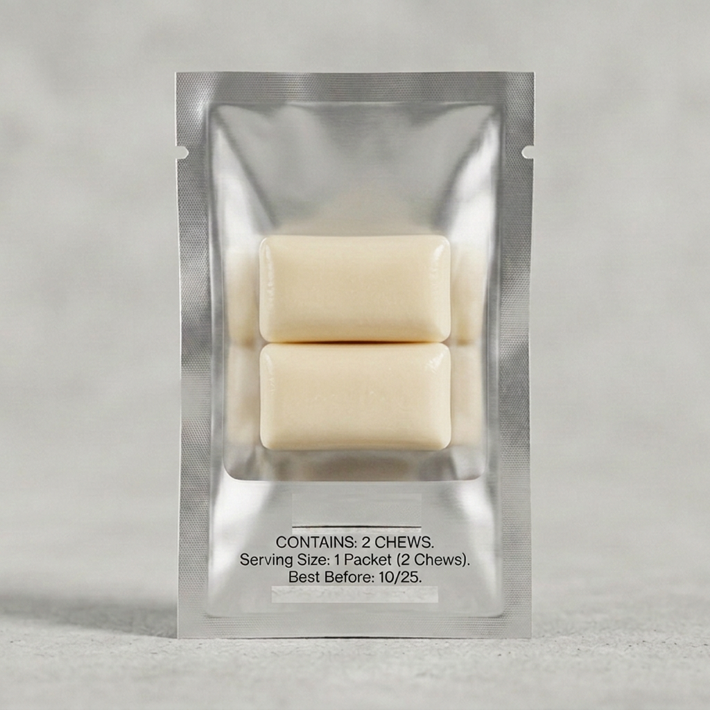

/sɪgnɑːl/
Enter password to view.
Aging isn't a calendar. It's an energy economy. Every cell in your body needs ATP (the energy molecule your cells run on) to do its job — repair DNA, build collagen, clear damaged proteins, hold water in skin tissue, fire a thought. When the energy declines, none of those jobs stop. They just underperform. That's what "aging" actually looks like at the cellular level.
“a living cell requires energy not only for all its functions, but also for the maintenance of its structure. without energy life would be extinguished instantaneously, and the cellular fabric would collapse.”
— Albert Szent-Györgyi · Nobel Lecture, December 11, 1937
For decades, the science of aging has been a list of separate problems. The 2023 update to the canonical "Hallmarks of Aging" paper names twelve of them: telomere attrition, genomic instability, epigenetic drift, loss of proteostasis, mitochondrial dysfunction, cellular senescence, stem cell exhaustion, altered intercellular communication, deregulated nutrient sensing, dysbiosis, chronic inflammation, disabled macroautophagy.
Twelve hallmarks. Twelve research silos. Twelve different supplements promising to treat each one in isolation. And almost all of them — collagen for skin, NAD+ for sirtuins, melatonin for sleep, urolithin for autophagy — are reaching for a downstream symptom.
In 2025, Volkmar Weissig (President, World Mitochondria Society) published a review article arguing that mitochondrial dysfunction sits upstream of all eleven other hallmarks. Mitochondria don't just produce ATP — they also run intercellular communication via signaling molecules (mtDAMPs, mitochondrial-derived peptides, cardiolipin). When the energy economy fails, every cellular maintenance process — DNA repair, autophagy, telomere maintenance, collagen synthesis — starts underperforming because it can't run without ATP.
— the line that crystallized this thesis (young_goose_skincare, crediting Weissig)
Walk into any wellness store and look at what's selling. Collagen powder treats skin structure. NAD+ precursors target sirtuin activation. Melatonin nudges sleep onset. Urolithin A pushes autophagy. Each one picks one downstream hallmark and tries to push it directly.
It's not that they don't work. It's that they're all reaching downstream of the same upstream system. If your cells don't have the energy to do their jobs, no amount of raw material reaches the cellular machinery that actually uses it. You can pour collagen into a body that can't synthesize it. You can supply NAD+ to mitochondria that can't run it. The bottleneck isn't the substrate. The bottleneck is the energy economy.
signal isn't another outcome supplement. It's the substrate underneath the substrate — the formulation built around protecting and supporting the energy production that lets every other supplement actually do its job. The flagship SKU delivers this via a dual-chew daily packet: a substrate chew that supplies the raw materials cells use to make energy, and a keystone chew that protects the mitochondrial machinery where that energy gets made. Future SKUs extend the thesis along rhythm and format — never into outcome categories that would put signal in competition with the specialist supplements it supports.
other supplements treat symptoms. cellcare is the daily practice that supports the energy running them all.
You've been stacking supplements for years. Collagen in coffee. Electrolyte sticks. A beauty gummy. A greens multi. Four to five products a day, $7.50 on the low end. Never sure what any of it was doing. The problem was never the ingredients you were putting in. It was what happened to them once they got inside.
Collagen, HA, B-vitamins, electrolytes, probiotics. Raw materials everywhere. You’ve already invested in the ingredients. The ingredients aren’t the problem.
Without the energy to use what you’re giving them, your cells are running on substrate alone. You’re feeding a machine that can’t fully run.
The signal your cells are waiting for. Every other supplement in your routine finally has a purpose. One packet. Every day. On your time.
Ninety days of you actually taking it — because you wanted to.
A chew you actually wanted to eat. Ninety seconds that felt like a moment, not a task. First thought: this isn’t what a supplement experience is supposed to be.
You haven’t skipped once. Not out of discipline — because the ninety seconds is the moment you look forward to.
Supplements aren’t a chore anymore. Routine stopped feeling like willpower. For the first time, consistency is the easy part — and you finally get why it was the whole point all along.
you take a packet a day. not because you feel it working. because you understand why it does.
signal is a single flagship SKU built on a dual-chew architecture. Every packet contains two functionally distinct soft chews: a substrate chew that delivers the raw materials cells use to make energy, and a keystone chew that protects the mitochondrial machinery where that energy gets made. Two independent layers, not a stitched mechanism — substrates do the work; the keystone protects the machinery doing it. Every packet is the thesis made literal.
The cofactors and precursors cells use to produce ATP and run autophagy — the two engines of cellular energy and cellular renewal.
Methylated B-complex lives in N°002 (the daily fuel tier). Stack the two SKUs and you cover the full daily picture — zero overlap.
Four keystones — one ionic activator plus three mitochondrial protectors, each its own registered ingredient brand with RCT pedigree — plus sensory-dose cofactors shaping the post-ingestion body-feel.
The format: Two 90-second dissolvable soft chews per packet, 2.7 × 1.5 × 1 cm each (roughly a Hi-Chew footprint). A packet a day = ~3-minute ritual with the two-tier transitional flavor profile, plus a post-chew body-feel. No water, no mixing. 30 packets per container = one month. Claim discipline: signal describes mechanism — what the cell uses, what the machinery does. It does not claim outcomes. Those claims would force signal into competition with the specialist supplements it supports; mechanism-only claims keep signal upstream of every one of them. Efficacy closes via ingredient-level RCT pedigree + real-world retention metrics — the Grüns playbook.
Foundation supplements fail on retention — pills endured, powders choked, gummies regressed to candy. By day 60 it's in the back of the cabinet. signal is a daily pleasure that happens to carry clinical doses. That's not a feature; it's the whole mechanism: ingredients only work if you keep taking them, and you only keep taking them if the experience is something you'd repeat for its own sake. The two-tier transitional flavor profile is how signal engineers that: two feelable moments during the chew, plus one sustained body-feel after.
An immediate, bright, awakening hit. High-volatility, water-soluble top notes flash off as saliva contacts the Hi-Chew–adjacent matrix. Subthreshold cool chemesthetic front layered in. The first bite is a register shift — you know this isn't a gummy.
The heart of the flavor. Medium-volatility mid notes release as matrix dissolution exposes more surface area — gingerol and cinnamaldehyde drive the warm heart at the chew's center.
A satisfying, lingering close. Low-volatility, lipid-soluble base notes carry through as the matrix gives up its fat phase last. Subthreshold warm chemesthetic close. Two chews carry the two-tier transitional flavor profile, plus a post-chew body-feel.
In the 20–60 minutes after you chew, consumers report a sense of grounded clarity — a warm, settled quality distinct from caffeine. No ramp, no crash, no jitter. The body-feel that solves the "invisible benefit" problem — not part of the in-chew arc, but the daily proof that something is happening.
Why this matters for retention. Tru Niagen and Elysium both hit formulation quality and capped at ~$100M revenue because customers couldn't feel them working. signal's two-tier transitional flavor profile makes the benefit feelable at two moments in the chew plus one sustained moment after — a daily retention anchor by design, not by hope.
Nothing like this exists at the clinical-dose foundation layer. Two functionally distinct soft chews per packet, staged flavor architecture inside each, tear-open packet with clear PET back revealing both chews, 30-packet container = one month. Format is the entry point, not the durable moat (expect imitation in 18-24 months) — but the architecture underneath it compounds past any format copy.


Two chews per packet — one substrate chew (SKU-colored), one keystone chew (signal-red). Both visible through the clear PET back before you open it. A packet a day. The architecture is readable at a glance.

Allulose shell, progressive dissolve, warm heart of mid notes (10–30 sec). Two 90-second chews = ~3-minute ritual with the two-tier transitional flavor profile, plus a post-chew body-feel. No sugar, no sugar alcohols. Distributed absorption across oral mucosa and GI as the chews dissolve.

Deep Evening primary box. Recyclable paperboard with foil-stamped wordmark. Premium unboxing without plastic clamshell. A monthly cadence that matches how consumers think about subscriptions.
Grüns proved the daily-packet-in-container architecture is worth $1.2B. signal applies the same ritual architecture to the upstream substrate layer — with a dual-chew format that physically embodies the category position and has no analog in foundation supplements.
signal's thesis is built on two layers of evidence: (1) the published RCTs on each branded substrate and keystone at the dose we use, and (2) the established biology of mitochondrial function as the upstream driver of cellular maintenance. We don't claim a single combined-formulation trial — the Efficacy gate closes via ingredient-level RCT pedigree plus M3 habit-metric proof (the Grüns $1.2B playbook). Every individual ingredient is at its studied dose; the framework we're building toward is the one the longevity research community is converging on. See A8 for the full efficacy closure strategy.
| Ingredient / brand | signal dose | Chew | Evidence basis & mechanism |
|---|---|---|---|
| AstaZine® Astaxanthin (Algae Health Sciences / BGG) | 4 mg / day | Keystone | Tominaga 2017 (placebo-controlled) • multiple studies on mitochondrial lipid-bilayer protection. Two FDA NDIs (12 mg, 24 mg); Ecocert® organic-certified. |
| Kaneka QH® Ubiquinol (Kaneka, Japan) | 100 mg / day | Keystone | First-to-market ubiquinol (2006); US GRAS. Core component of mitochondrial electron transport chain; reduced form of CoQ10. |
| MitoPrime™ Ergothioneine (Nutrition 21) | 10 mg / day | Keystone | US GRAS + EU Novel Foods. Sulfur-containing amino acid the body cannot synthesize; concentrates in mitochondria where oxidative load is highest. |
| BioPQQ® (Mitsubishi Gas Chemical) | 20 mg / day | Substrate | Branded PQQ used in human studies on mitochondrial biogenesis (Chowanadisai 2010; Nakano 2012). The supplier-linked PQQ behind the biogenesis literature. |
| SpermidineLIFE® (Longevity Labs) | 800 mg / day | Substrate | Branded wheat-germ spermidine; the form used in human autophagy studies (Kiechl 2018 longitudinal; Schwarz 2018). Autophagy is the cellular-renewal pathway spermidine upregulates. |
| Suntheanine® L-theanine (Taiyo International) | 100–150 mg / day | Keystone cofactor | Specific L-isomer used across clinical research (Nobre 2008; Kimura 2007). Supports calm-alertness quality of post-ingestion body-feel. |
| Albion TRAACS® Magnesium Bisglycinate (Balchem) | ~1.5 g / day (~200 mg elemental Mg) | Keystone — ionic activator | Patent-protected chelate form. Mg-ATP is the biologically active form of ATP; Mg²⁺ is cofactor for 600+ enzymes including the mitochondrial dehydrogenases (PDH, IDH, OGDH) and creatine kinase. ~48–55% of U.S. adults fall below the Mg EAR (NHANES). |
| N-Acetyl L-Tyrosine (NALT) (USP-grade, generic) | 200–300 mg / day | Keystone cofactor | USP-grade N-acetyl L-tyrosine. Tyrosine precursor in the catecholamine-synthesis pathway. Sensory-dose contribution to post-ingestion body-feel architecture. |
| L-citrulline | 300 mg / day | Keystone cofactor | Pharma-grade amino acid. Converts to arginine; supports nitric-oxide pathway underlying vascular function. Sensory-dose contribution to post-ingestion arc. |
| Gingerol | 10 mg / day | Substrate | Ginger-root bioactive. Sensory warming cue for the Phase 2 warm heart; trace metabolic signaling. |
| Mitochondrial dysfunction framework | — | — | Weissig 2025 review • López-Otín et al. 2023 (Hallmarks of Aging update) • PMC10776122 (hallmark interactions). Foundational framework, not a clinical claim. |
Claim discipline is structural, not cosmetic. signal does not claim outcomes. Not "energy you feel." Not "clearer skin." Not "better sleep." signal describes mechanism — what the cell uses, what the machinery does. Outcome claims would force signal into competition with the specialist supplements it supports; mechanism-only claims keep signal upstream of every one of them. Every branded substrate and keystone above carries its own peer-reviewed RCT evidence at the dose we use.
We're not spending bootstrapped capital on a clinical trial at launch because we don't need to. Every active in signal is either a branded ingredient with its own published evidence base or a USP-grade generic with well-established physiology. BGG's AstaZine® astaxanthin program, Kaneka's QH® ubiquinol program, Nutrition 21's MitoPrime™ ergothioneine program, Mitsubishi's BioPQQ® program, Longevity Labs' SpermidineLIFE® program, Taiyo's Suntheanine® program, and Balchem's Albion TRAACS® magnesium bisglycinate program each have multiple human RCTs behind them. Our capital goes to habit metrics and supply chain — the two things Grüns actually won on. A publishable signal-specific RCT sits in the Series A plan, funded by revenue, not dilution. See A8 for full strategy.
Stack the wellness category like a pyramid. At the top: visible outcomes — the things people buy supplements for. In the middle: cellular maintenance processes — what the body actually does to produce those outcomes. At the base: energy — the ATP that makes every middle-tier process possible.
Every other supplement brand fights for the top two tiers — either an outcome (Tier 3) or a cellular maintenance process (Tier 2). signal fights for the bottom one. You can't out-collagen a brand at Tier 2 without first solving Tier 1. That's the structural reason signal is a different kind of product — the upstream layer the other two tiers depend on to do their work.
Strategic upside: this also makes signal additive to the rest of a customer's stack instead of competitive with it. You don't have to drop your collagen powder to add signal — signal supports the cells that your collagen powder is asking to do work.
signal's defensibility is a stack of seven layers. No single layer is a formulation moat — supplement brands never have one. The moat is the compounding effect of category position + brand equity + format IP + supplier relationships + habit metrics + APAC arc + platform discipline. By the time competitors react to any one of these, signal has the other six already in motion.
Honest framing. The supplement category has never rewarded formulation defense. Grüns, AG1, Ritual, Nutrafol, Liquid I.V. — every category leader won on brand, format, category ownership, and habit, not a secret blend. Olly, Lemme, and a future Unilever house brand can all import a Hi-Chew-style chew and a mitochondrial ingredient list. None can retroactively claim the upstream-substrate category position, replicate Vanness Wu's brand equity, or build a habit-metric brand from a standing start in the same window. The layers below compound. That's the moat. And the obvious 2026 question — if AI helped build this, can't anyone? — answers itself: AI is a tool every competitor already has, and it builds none of the seven layers above. It is how we execute the stack faster and leaner; it is not the stack.
| # | Layer | Time to Replicate |
|---|---|---|
| 01 | Category position — "the upstream layer of the supplement stack." First brand to claim it. Narrative land grab; defensible once consumer association forms. | Uncopyable once locked |
| 02 | Brand-equity co-founder — Vanness Wu confirmed as brand-equity co-founder (structural, not endorsement). Every $1B wellness brand has a public-facing founder figure. This is the single biggest lever between $200M and $1B trajectories. | Uncopyable |
| 03 | Format IP — dual-chew architecture (substrate chew + keystone chew) with staged flavor architecture inside each chew. Physically embodies the substrate-plus-keystone thesis; flavor signature is a first-class brand asset. Provisional patent filed defensively. | 12–18 months |
| 04 | Branded-ingredient relationships — 7 branded ingredients with their own RCT pedigree: AstaZine® (direct BGG founder relationship, Ecocert® organic, two FDA NDIs), Kaneka QH® Ubiquinol, MitoPrime™ Ergothioneine, BioPQQ®, SpermidineLIFE®, Suntheanine®, Albion TRAACS® magnesium bisglycinate. Each carries its own supplier relationship + its own peer-reviewed evidence at the dose we use. | Relationship-locked; 12+ months per axis |
| 05 | Habit-metric architecture — the two-tier transitional flavor profile (bright bite → warm heart → lingering close, plus grounded clarity post-chew) + daily packet ritual + monthly container cadence. Designed to deliver 70%+ daily-use. Category-defining metric (the Grüns playbook). | Impossible without format change |
| 06 | APAC arc — Vanness Wu's Asian audience reach + Frank's GNC Taiwan category expertise. Cross-border distribution anchored in two relationships no competitor can replicate at the same economics. | Uncopyable |
| 07 | Platform discipline — cellular-energy-company architecture with ingestibles-only scope and the two-question test for every future SKU. Extends along rhythm and format, never into outcome categories. 12–24 months for a competitor to retroactively unify a platform under a different brand. | 12–24 months — can't be retroactively unified |
signal — the single flagship daily dual-chew packet. Establishes the upstream-substrate category and the daily-packet ritual. One SKU, one thesis, zero ambiguity.
Phased rhythm variants (future rhythm variants and adjacent ingestible formats) and adjacent ingestibles (Bar, Beverage). Every future SKU passes the two-question test: is it ingestible? does it sell because of cellular energy? Outcome-category SKUs are explicitly banned.
signal sits at the overlap of three already-massive markets, claiming a category position none of them currently occupy: the upstream substrate layer of the global supplement stack.
$180B+
The market signal is positioned upstream of. Every category leader — AG1, Nutrafol, Ritual, Vital Proteins, Liquid I.V. — asks cells to do work. None delivers the cellular energy that work requires. The upstream layer is unclaimed.
$50B+
NAD+ precursors, urolithin A, CoQ10, NMN, NR, ergothioneine. Comp set: Novos, Tru Niagen, Timeline, Elysium, Qualia. Mostly capsule, mostly biohacker-coded, mostly invisible-benefit. No consumer-legible brand owns this lane with a daily ritual architecture.
~$25B
Grüns, AG1, Liquid I.V., Ritual, Olipop. Brands that sold on daily-use habit + packet/container ritual + premium pricing. The architectural category signal sits inside — now validated at $1.2B acquisition multiple by Unilever.
Cellular energy is the trade-press wave of 2026. NutraIngredients, BeautyMatter, Vogue Scandinavia, and Glossy have all run "cellular health" or "mitochondrial" framings in the last six months. The phrase is dominant in 2026 trade press but no consumer brand has claimed it. signal plants the flag at the convergence point of these three markets and a cultural moment.
Comp set for exit pricing: Grüns ($1.2B Unilever, April 2026) for the daily-packet format/category playbook. Vital Proteins (acquired by Nestlé) and Liquid IV (Unilever) for category precedent. Platform brands trade at higher multiples than single-outcome brands — a brand positioned as "the upstream layer of the supplement stack" is structurally a platform buy, one acquisition sitting above every outcome category a strategic acquirer might build around it.
signal's entire brand foundation was built by one. Working with an AI operating system, our CEO, Damon, produced the complete brand system — strategy, identity, a 10-chapter operating codex, a five-year financial model with its own adversarial audit, packaging, and regulatory-aware positioning — in a single quarter, for a few hundred dollars in AI tooling: the work of a branding agency, a strategy consultant, and a financial analyst, compressed.
That is the foundation. The four-founder team is assembled around it deliberately — each founder owns a vector a builder cannot cover alone: a public-facing brand figure, cross-border distribution, and operational execution. signal's R&D, quality, and regulatory function is Zone Halo — an embedded development arm (formulation, QC, stability, compliance) led by operators from successful supplement companies and aligned by a per-unit royalty on every box sold: they win only when signal wins. Marketing runs through Robot Friends. This is the operating model the capital ladder funds: AI for knowledge work, an incentive-aligned R&D partner for the regulated layer, headcount near zero until revenue earns it.
Strategy, product, brand, and the financial model. Built the foundation; runs the company.
Public-facing founder figure and APAC audience reach — structural, not endorsement. The single biggest lever between a $200M and a $1B trajectory.
GNC Taiwan category expertise. Cross-border retail and the APAC distribution path.
Day-to-day execution and operating cadence as the brand goes to market.
Direct-to-consumer subscription. One 30-pack ships monthly. Single flagship SKU at launch — uniform pricing, uniform economics, uniform messaging. The Founder's tier anchors the first 500 subscribers; Subscriber is the steady-state price; One-time preserves retail-listing parity. Send a Signal mechanic is permanent.
| Tier | Price | Per serving | Launch GM | Notes |
|---|---|---|---|---|
| Founder's Price (first 500) | $59 / 30-pack | $1.97 | 29% | Lifetime lock for early supporters. Closes at customer 500. |
| Subscriber (15% off) | $75 / 30-pack | $2.50 | 44% | Auto-ship monthly. Pause/skip anytime. |
| One-time / MSRP | $89 / 30-pack | $2.97 | 53% | Trial purchase or non-subscriber repeat. Retail-listing parity. |
| Send a Signal (non-subscriber) | $5 / send | — | — | Launch-era classic. Pay $5, two packets ship: one to a friend, one to sender. Net ~−$0.55/send, absorbed as CAC substitute. |
| Send a Signal (subscriber, permanent) | $5 / send | — | — | Permanent feature. Subscriber pays $5, one packet ships to a friend who hasn't tried signal yet. 1/month throttle, recipient-novelty check. Net ~+$2.00/send. The brand verb as permanent growth engine. |
| Volume | GM | Notes |
|---|---|---|
| 2.5K containers (launch) | 53% | COGS $42 / 30-pack. MOQ pricing. At MSRP. |
| 10K containers | 66% | CMO pricing normalizes post-MOQ. Ritual-tier margin profile. |
| 50K+ containers / offshore CMO | 78% | Soft chew production shifts to Korea/Japan (Hi-Chew-style soft chew is an Asian CMO capability, not just cost). Above-benchmark margin. |
Target unit economics at month 12: ~60% blended gross margin, ~$270 LTV at 6-month retention ($540+ at 12-month), ~$0–$2 net CAC via Send a Signal vs. $25–$50 paid social CAC. Month-12 MRR base case: ~$200K run-rate (2,700 active subscribers × $75/month + ~300 one-time/month × $89 + ~$7.5K Send a Signal). Grüns-benchmark retention (80%) takes run-rate to ~$310K; habit underperformance (50–60% retention) drops to ~$150K — which is why M5–M8 habit-metric milestone is load-bearing. Numbers are directional estimates pending Zone Halo COGS validation and 3PL shipping quotes.
Execution sequence is locked. Critical-path dependencies are manufacturing validation (longest lead time), patent priority (must file before public demo), and habit-metric proof (closes the Efficacy gate via the Grüns playbook — retention + ingredient pedigree, not a company-funded pilot). Everything else runs in parallel.
| Window | Milestone |
|---|---|
| M1–M2 | signal N°001 (the foundation, dual-chew packet) formulation kickoff: Zone Halo dual-chew architecture — substrate chew + keystone chew = 2 formulations at ~$10K each, Sean Wells direct relationship. Seven registered ingredient brands: AstaZine® + SpermidineLIFE® + Kaneka QH® + MitoPrime™ + BioPQQ® + Suntheanine® + Albion TRAACS® Mg bisglycinate. Founders' MOU + incorporation in parallel. |
| M3–M4 | signal N°001 production ramp. Provisional patent filed (dual-chew architecture). CMO MSA signed (Zone Halo formulation → soft-chew CMO partner selection, Korea/Japan track). Accelerated-stability testing on both chew matrices. Single-SKU Phase 1 keeps the formulation scope tight. |
| M5–M6 | signal N°001 launch (Q4 2026): the foundation dual-chew packet ships DTC-first (30 packets per carton). Founder's Price window for first 500 names. Vanness content activation. Brand in-market under the cellcare category (internal taxonomy; consumer-facing brand uses foundation / the practice / 30-day cycle). |
| M7–M12 | Rolling reveal calendar: Vanness brand-equity announcement, ingredient-partner storytelling, packaging reveal, CMO build-in-public content. Send a Signal beta launches to 200–500 testers. Habit measurement target: 70%+ daily-use rate on N°001 by M3 of beta. signal N°001 revenue funds signal N°002 (the daily fuel) formulation + CMO lead time. |
| M13–M18 | signal N°002 (the daily fuel) formulation kickoff: 5-active ATP-machinery tier — NNB Pürest Creatine™ + Albion TRAACS® Mg bisglycinate + BetaPower® Betaine (TMG) + Bioenergy Ribose® + active-form methylated B-complex. Two pearl chews per packet, soft-chew specialist CMO (different track than Zone Halo). F&F round opens conditional on M3 retention trigger. |
| 2027 (M18–M24) | signal N°002 (the daily fuel) public launch. Two pearl chews per packet, the ATP-machinery layer that stacks underneath N°001. Existing N°001 subscribers add the stack-on (N°001 foundation + N°002 daily fuel = ~$130/mo full daily practice). Co-marketing partnerships activate. |
| 2027+ (post N°002) | signal N°003 (the evening practice chew, 2028) completes the daily practice. Additional formats: rhythm-variant SKUs (TBD) via Phase 2 capital. Production scale-up on N°001 foundation packet as the brand expands. |
Launch is DTC-subscription-first (highest-margin lane, fastest habit-data feedback loop). Retail opens in a specific sequence chosen to match where the already-stacking buyer already shops:
The single number that matters in the first 6 months: daily-use rate. Grüns won on 80% daily-use + 85K verified reviews. signal's habit hypothesis stands or falls on whether the chew + ritual produces the same shape of curve. Everything else is downstream of that one metric.
Every pre-launch concept has risk. Listing them here rather than waiting for the question is part of how we run diligence. These are the five we think are load-bearing, with the specific mitigations already in the plan.
| # | Risk | How it manifests | Mitigation already in plan |
|---|---|---|---|
| 01 | Habit-metric failure. The chew doesn't reach 70%+ daily-use in beta. | Retention curves look like the category average (60–70% drop by day 60). Investor thesis collapses. | M5–M8 is explicitly a milestone gate. If the habit metric isn't trending toward 70% by M3 of beta, we rework format or ritual before scale spend. Send a Signal beta is the real-world test; the two-tier transitional flavor profile is designed to solve the "invisible benefit" problem that capped Tru Niagen and Elysium. |
| 02 | Category-creation window closes. A better-resourced competitor claims the upstream-substrate / cellular-energy lane first. | First-mover narrative position erodes. signal becomes one of several substrate brands instead of the category-creator. | The 6–9 month window is the entire reason the milestone-gated timeline is front-loaded on launch speed, not scale. Flagship-only Phase 1 cuts formulation time from 12+ months to 3–4 months. Vanness as confirmed brand-equity co-founder gives the category a public-facing founder before any competitor assembles one. |
| 03 | Formulation timing slippage. The dual-chew formulation cycle runs long. | Foundation launch pushes from Q4 2026 into 2027 and the category window compresses. | Zone Halo is a direct-relationship formulator. Single-SKU Phase 1 keeps scope tight; the two chew formulations parallel-track; accelerated-stability testing is a first-sprint deliverable. If the foundation slips, the daily-fuel SKU (different CMO) can pull forward to keep the brand in-market. |
| 04 | Claim-discipline drift. Marketing or press implies an outcome claim ("gives you energy" / "reverses aging"). | FDA warning-letter exposure — and the upstream-substrate position collapses, putting signal in competition with specialist supplements instead of upstream of them. | Claim discipline is a structural lock: mechanism-only, never outcome. Every dose is the dose that was studied. Pre-launch regulatory-counsel review is a budgeted line item; the banned-language list is explicit and enforced in every creative review. |
| 05 | Founder concentration. The brand was built by one founder with an AI operating system — can a near-solo team execute a physical, regulated CPG company? | The same leverage that makes us capital-efficient could cap us if it hides a gap where human operators are required (bus-factor, execution). | AI is leverage on the founder's judgment for knowledge work — it does not touch the physical or regulated layer, and we don't pretend it does. That layer is owned by Zone Halo, an embedded R&D/quality/regulatory arm led by supplement-industry operators and aligned by a per-unit royalty — skin in the game, not a flat fee. Each co-founder owns a vector the builder cannot — Vanness (brand/APAC), Frank (distribution/category), Gabby (operations); marketing runs through Robot Friends. The first key internal hire the ladder funds, once revenue triggers it, is a senior CPG/operations operator — the explicit answer to bus-factor, not a hope it won't matter. The model scales output without scaling headcount linearly, which is precisely what the capital ladder funds. |
the risks we flag are the ones we've already priced in. the scary risks are the ones nobody is flagging.
signal raises on a milestone-gated ladder, not a single anchor check. The four co-founders self-fund the first $250K. From there, capital comes in $250K tranches — $250K → $500K → $750K → $1M — each rung unlocked by demonstrated traction, the first from friends & family. Asking against proven milestones instead of projections improves terms at every step. The engine that makes the ladder work is capital efficiency: an AI operating system lets a near-solo team turn each $250K into the milestone a fully-staffed team would need 3–4× the capital to reach. Every dollar buys more proof.
| Category | Range | Purpose |
|---|---|---|
| Zone Halo formulation (dual-chew) | ~$20K | Substrate chew + keystone chew = 2 formulations at ~$10K each. Sean Wells direct relationship. Seven registered ingredient brands across the two chews. |
| Provisional + design patents | $8K–$10K | Defensive priority date on dual-chew architecture. Not pitched as moat. See A7. |
| First production run (small MOQ) | $15K–$30K | ~2,500 containers initial inventory for DTC launch |
| Packaging + branding assets | $5K–$10K | Red front + silver back packets (dual-chew visible); landing page refresh |
| Incorporation + legal | $5K–$10K | Founders' docs, CMO MSA, claims review, FDA NDI if needed |
| Pre-launch marketing (organic-first) | $0–$10K | Vanness content activation + TikTok-native creator UGC. No paid anchor. |
| Founder compensation | $0 | Delayed until post-retention / F&F round |
| signal N°001 bootstrap total | $53K–$100K | Co-founders self-funded. Higher launch-window COGS than a single-tier chew but stronger Day-1 product. Revenue funds signal N°002 (the daily fuel). |
| Category | Range | Purpose |
|---|---|---|
| signal N°002 formulation (5-active ATP tier) | ~$12K–$18K | NNB Pürest Creatine™ + Albion TRAACS® Mg + BetaPower® Betaine (TMG) + Bioenergy Ribose® + active-form methylated B-complex. Two pearl chews per packet. Low-moisture soft-chew matrix, stability-designed. Simpler formulation than N°001 dual-chew. |
| Soft-chew CMO + first production run | $20K–$35K | Low-moisture chew specialist (VOW-pattern stability). Different CMO track than Zone Halo. ~3,000 containers = 180K chews initial inventory. |
| Packaging + branding | $6K–$12K | 30 packets per carton design, labels, wrap. Rose-linen foil packet front. |
| signal N°002 total | $38K–$65K | Funded by signal N°001 revenue + F&F round (conditional on retention trigger). Stack-on, not flagship-graduation. |
| Category | Range | Purpose |
|---|---|---|
| F&F check size | $25K–$100K per participant | 3–5 participants = $150K–$400K total |
| Phase 2 rhythm variant (Zone Halo) | ~$20K | Phase 2 rhythm variant SKU (TBD). Single new SKU, tight scope. Subsequent rhythm variants funded from revenue. |
| Production scale-up | $80K–$180K | Expanded flagship inventory to match habit-validated demand; initial Phase 2 inventory |
| Advisory board + retention analytics | $40K–$80K | 3–5 credentialed scientists + cohort tracking. Closes Efficacy gate via habit metrics + ingredient pedigree, not a company-funded RCT (see A8) |
| Founder runway + first ops hire | Remainder | CEO + COO salaries start post-F&F; supplement-ops hire per Grüns-shaped opportunity |
| Phase 2 trigger | 70%+ M3 daily-use + 500+ paying subscribers + retention tracking toward Grüns benchmark | |
A stake in the first brand positioned upstream of the global supplement category — the cellular-energy layer every specialist supplement depends on to do its work. Brand-equity co-founder Vanness Wu with Asia distribution baked in. A clear sequence from bootstrap launch (signal N°001 the foundation, Q4 2026) → retention proof (M3) → signal N°002 the daily fuel as stack-on (2027) → Phase 2 expansion via F&F round → phased platform expansion. Exit playbook: Grüns sold for $1.2B in April 2026 in the same daily-packet format category. Platform brands trade at higher multiples than single-outcome brands — signal's upstream category position is multiple expansion, not just differentiation.
These statements have not been evaluated by the Food and Drug Administration. This product is not intended to diagnose, treat, cure, or prevent any disease. signal is a dietary supplement.
Clinical citations referenced in this deck (Oe 2017, Kawada 2014, Gao 2022, Guillou 2011, Bizot 2017, Tominaga 2017) support the individual ingredients at the doses studied — not specific outcomes for any individual. Individual results vary.
signal does not claim to "treat mitochondrial dysfunction" or "reverse cellular aging." The cellular energy framework presented in this deck (slides 2–4, 8) describes the biological foundation we are building toward and the published research that informs our formulation choices. It is not a clinical claim about any specific SKU. Each substrate and keystone carries its own peer-reviewed RCT evidence at the dose we use.
signal has not been tested as a combined formulation in a company-funded clinical trial. The efficacy gate closes via ingredient-level RCT pedigree + real-world retention/habit metrics (the Grüns playbook). Synergistic effects between ingredients are not claimed.
Market figures and acquisition valuations are sourced from public reports and may vary by source. The Grüns $1.2B acquisition by Unilever (April 2026) is publicly confirmed.
Vanness Wu is confirmed as signal's brand-equity co-founder (2026-04-20). Structural business decision: equity-aligned, operationally involved, public-facing identity partner. Equity percentage, operational scope, IP/rights, and competitive-brand firewall are outstanding legal/operational documentation items. This deck represents preliminary intent and is not a binding investment offer.
This deck is confidential. v5 reflects all architecture locks through 2026-05-21: dual-chew foundation, cellular-energy-company platform, mechanism-only claim discipline, customer-facing triad (foundation / the practice / 30-day cycle) replacing customer-facing cellcare, §II On Trust objection-handling discipline, and the 2026-05-21 SKU rename (N°001 = the foundation dual-chew Q4 2026; N°002 = the daily fuel 5-active ATP 2027). Earlier deck versions (v2/v3/v4) are archived historical cuts.
“life is nothing but an electron
looking for a place to rest.”
— Albert Szent-Györgyi